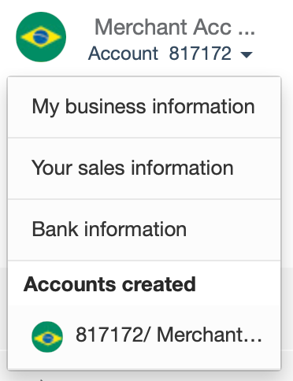
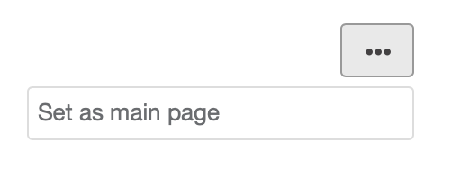
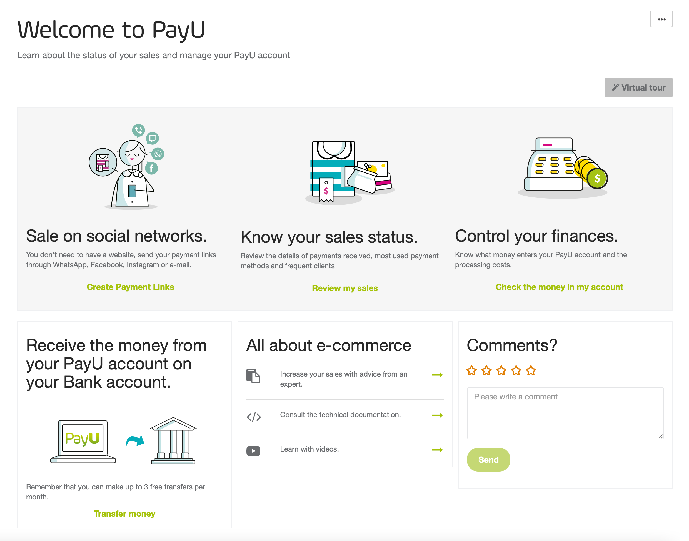

Update my information
Learn how to change your password, update your user preferences, change the merchant’s logo and request the change of your Bank information.
On this page
Before moving on with the explanation of how the PayU module is organized, you need the following:
PayU module is divided in four main groups:

This panel has the options required to manage the accounts associated to the current merchant. In this panel you find the following options:
| Option | Sub option | Available in | Description |
|---|---|---|---|
| Merchant ID |  |
ID number of your merchant in PayU’s system. This ID is required when you want to use Integrations. | |
| Account | Account information | |
Displays the name and ID of the selected account. This option also lets you to change the account and perform operations related to it. Click the ▾ symbol to find these options or switch the account.  |
| My business information | |
Shows the location, main contact information of your business. Also, this option shows the people associated with your business. | |
| Your sales information | |
Shows the information of how you make your sales, what you sell, the logo of your shop, delivery information, how you offer your products or services and how your clients can contact you. | |
| Bank information | |
Shows the bank account and the Intermediary bank where you want to transfers the funds collected for this account. | |
| Accounts created | |
Shows the list of account available in your merchant. | |
| Balance available | |
Displays the balance available in the selected account. | |
| Home | |
Displays the welcome page of the PayU module. For more information, refer to Home page. | |
| Transactions | Sales report | |
Review the details of payments received, including the most used payment methods and frequent clients. For more information, refer to Sales report. |
| Disputes | |
Manage the dispute processes generated in your PayU account. For more information, refer to Disputes. | |
| Financial Statement | |
Allows you to understand the money flow in your account, the applied charges and the related fees and taxes. For more information, refer to Financial Statement. | |
| Withholding certificate |  |
Download your Withholding Certificate according to the requested period of time. For more information, refer to Withholding Certificate. | |
| Transfers | Transfers |      |
Allows you to send the funds collected in your PayU account to your Bank account. For more information, refer to Transfers. |
| Schedule Transfers | |
Allows you create transfer on a daily, weekly, monthly basis. Furthermore, you can configure custom transfers as you need. For more information, refer to Schedule transfers. | |
| Daily Payouts |  |
As PayU in Brazil is not a not a payment institution, the funds collected in your account are transferred to your bank account on a daily basis. Through this report, you can know the status of the daily transfers. This report is only available for accounts in Brazil and it has the same columns and options of the Transfers report. |
|
| Edit bank information | |
Allows you to request the change of the bank account and the Intermediary bank where you want to transfers the funds collected for this account. For more information, refer to Update my information | |
| Sell with PayU | Sell on the internet | |
Allows you to create payment requests so you can charge to your customers without having a website. For more information, refer to Payment request |
| Cash charges | |
Allows you to generate payment coupons or collection cards* with the necessary information to let your clients make cash payments as many times as they need in the available payment points. For more information, refer to Payment coupons. *Collection cards are only available in Argentina. |
|
| My tools | |
Allows you find and manage the information of Payment links (Payment request) and Payment Coupons* you have created in your account. *Payment coupons are only available in Argentina and Colombia. |
This panel has the options required to manage your merchant and your user.

This option allows you to manage users, permissions, profiles and the technical configuration of your merchant. By clicking the Settings button, you can find the following options:
| Option | Available in | Description |
|---|---|---|
| User management | |
Allows you to grant access to your team members so they can collect payments online or check information about your payments. For more information, refer to User management. |
| Permissions and profiles | |
Allows you to create custom profiles with specific permissions. In this section, you can also query the default permission included in the PayU Module. For more information, refer to Profile and permission management. |
| Technical configuration | |
In this option, you can find the variables required to integrate PayU with your Web page. Furthermore, you can configure the notifications of processed payments and Disputes. For more information, refer to Technical configuration. |
This option allows you to manage your profile. In the main view of this option, you find your e-mail, your current profile in the PayU module (for the current account), and the account Id; click the ▾ symbol to display the available user settings.
| Option | Description |
|---|---|
| Change merchant | This option is available when your user is enrolled to more than one merchant. |
| My profile | In this option, you can configure your preferences and update your password as desired. |
| Sign off | This option closes the session of the active user. |
This panel loads the selected option either in the left panel or in the option at the top. The Home page is selected by default, so it loads as soon as you log in the PayU module.
To set an option as displayed by default, click the three dot menu at the top right of the panel and select Set as main page.
The home page is starting point of the PayU Module. It shows the shortcuts to perform sales on-line, know your sales status, control your finances, transfers funds, learn about e-commerce and leave us comments.

In this page, you can also take a tour using the Virtual tour button. This button takes your through the main options to manage your account.
The footer provides the phone number to contact us and the link to the terms and conditions according to the processing country.
The following are the phone numbers and contact time:
(+5411) 598 42132 > Mon - Fri 09:00 - 22:00 (UTC -3:00) (+5511) 4130 5311 > Mon - Fri 09h to 18h / Sat 09h to 15h - Brasilia Time Zone (UTC -3:00) (+562) 258-13949 > Mon - Fri 8:00 - 21:00 Chilean time (+57) 601 654 0721 > Mon - Fri 7:00 - 20:00 Colombian time (UTC -5:00) (+5255) 474 11439 > Mon - Fri 7:00 - 20:00 CDMX time (+507) 836 5577 > Mon - Fri 7:00 - 20:00 Colombian time (UTC -5:00) (+511) 708 5381 > Mon - Fri 7:00 - 20:00 Peruvian time (UTC -5:00)Learn how to change your password, update your user preferences, change the merchant’s logo and request the change of your Bank information.
Find here all the details that help you to integrate your Website using any of the integrations we provide.